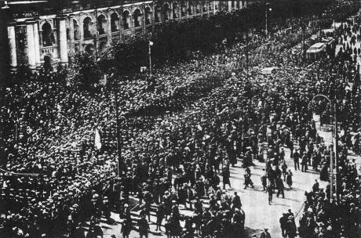
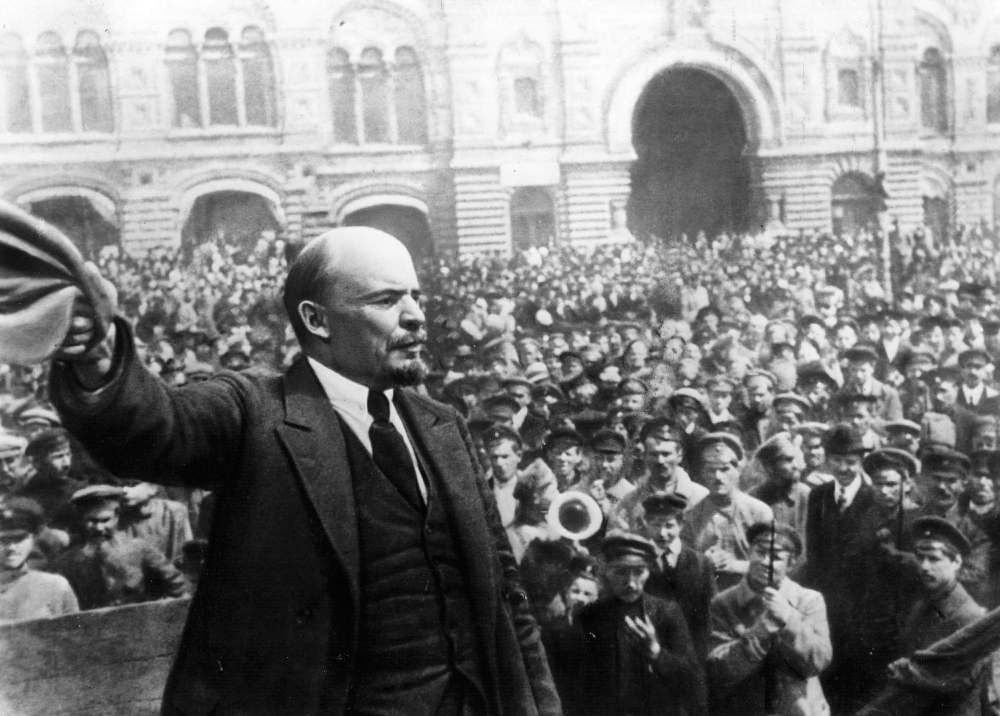

Event:

On Feburary, 1917, people protested on the streets demanding for a better environment. Even soliders and police joined in the protests. The government fell apart, yet the Czar chose to ignore it. Finally, the Czar realized how bad the situation was and abdicated on March 2. Soon after that, the Provisional Government was established, led by Alex Kerensky.23
However, Vladimir Lenin thought that the provisional government should be replaced by the soviets composed by workers, peasants and soliders. Lenin led a uprising with the Bolsheviks, an extremist branch of Communism, in July but failed and he was forced to flee to Finland. Soon, he returned with a force called the Red Gaurd, a militia of factory workers. The Bolsheviks also promised the people land, bread and peace, which was what everybody wanted. With the support of the people and the Red Gaurd, the Bolsheviks became more and more powerful. Finally, on October 24, the Bolsheviks took control over all the government buildings in a day, and on October 25, Vladimir Lenin declared the Provisional government overthrown, and thus, the Soviet Union was established.22